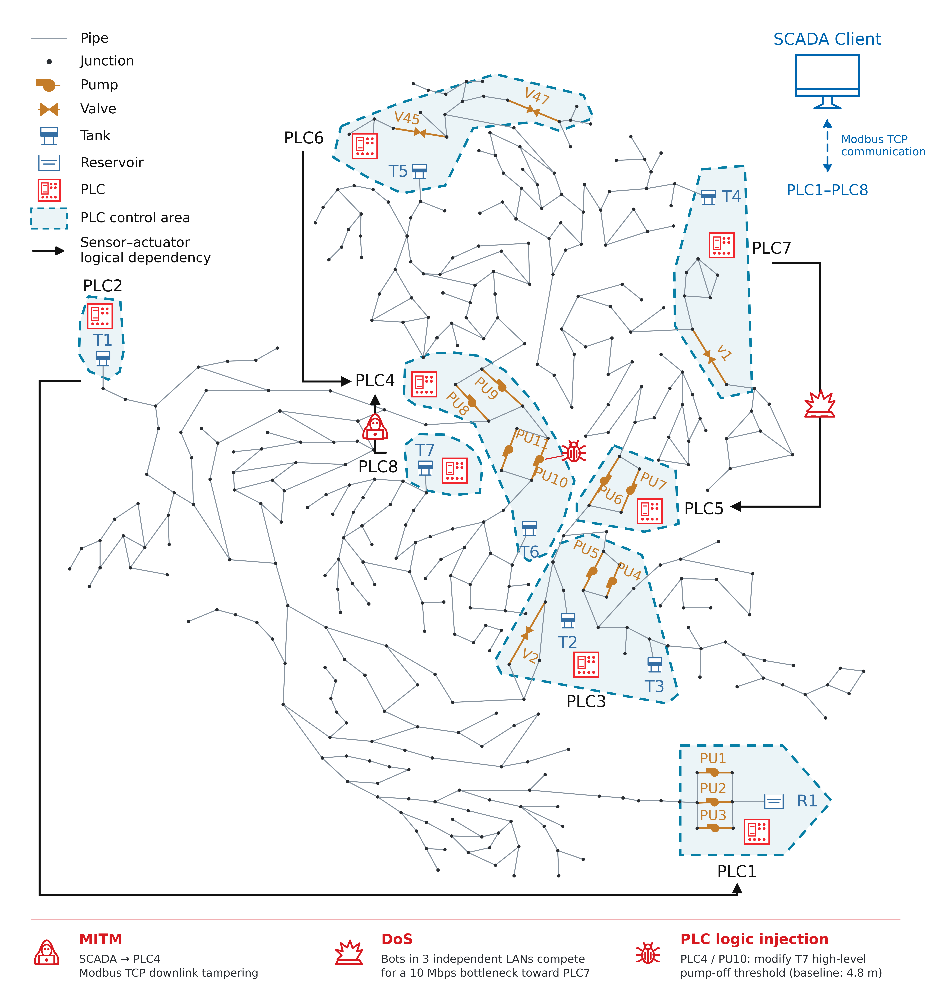

项目简介
水务信息物理系统
水务信息物理系统将供水管网、传感器、控制器和通信网络连接起来。传感器采集水位、压力和流量，PLC 根据这些数据控制泵阀，SCADA 负责监测和数据转发。泵阀动作改变管网状态，新的测量数据再进入下一轮控制。
研究这类系统的安全性，需要同时观察网络通信、控制程序和水力过程。例如，传感器数据被修改后，PLC 可能改变泵的启停状态；通信中断时，控制器也可能继续使用上一次收到的数据。
平台概览
Hydro-CPS-Sim 是面向供水系统安全研究的联合仿真平台。它将 EPANET 水力模型、OpenPLC 控制程序、Modbus TCP 通信和 ns-3 网络连接在同一闭环中，支持 MITM、DoS 和 PLC 逻辑注入实验。
你可以通过配置文件选择水网模型、控制规则、网络拓扑和攻击场景。运行时，平台启动各个组件，完成数据交换和水力计算，并保存日志与 CSV 结果。源代码位于 GitHub 仓库。
平台组件
水力仿真
DHALSIM-epynet / EPANET 计算水箱水位、节点压力和管道流量。PLC 输出的泵阀状态用于更新水力模型，因此控制变化会反映在后续的水力状态中。
PLC 与 SCADA
OpenPLC 执行结构化文本（ST）控制程序。SCADA 使用 Modbus TCP 读取传感器数据，并将跨 PLC 的控制依赖转发给相应控制器。PLC Adapter 负责衔接水力数据与 PLC 输入输出。
通信网络
Linux network namespace 为 PLC、SCADA 和攻击节点提供独立的网络环境。各节点通过 TAP/veth 接入 ns-3，可以配置链路带宽、时延和网络拓扑。
攻击与结果记录
平台提供 Modbus 数据篡改、UDP DoS 和 PLC 逻辑注入功能。攻击可以作用于通信数据、网络路径或控制规则。运行过程中记录传感器观测、执行器状态、攻击事件和水力变量，便于比较不同实验的系统行为。
C-Town 示例
C-Town 示例包含多个 PLC 控制区域。部分控制器使用其他区域采集的水位数据，由 SCADA 完成转发。

PLC间的逻辑关系
| 数据来源 | 经 SCADA 转发后的控制用途 |
|---|---|
| PLC2 的 T1 | PLC1 对 PU1、PU2 的控制 |
| PLC3 的 T2、T3 | 本地 V2 与 PU4、PU5 的控制 |
| PLC6 的 T5 | PLC4 对 PU8 的控制 |
| PLC8 的 T7 | PLC4 对 PU10、PU11 的控制 |
| PLC7 的 T4 | PLC5 对 PU6、PU7 的控制 |
PLC4 同时监测本地 T6 水位，并使用 T5、T7 数据控制相应水泵。
环境与扩展
平台运行于 Ubuntu，使用 Python 协调水力、控制和网络组件。各组件按功能组织在独立模块中，你可以修改 YAML 配置来调整场景，也可以扩展控制、网络或攻击模块。环境要求见安装与环境，第一个实验见快速开始。